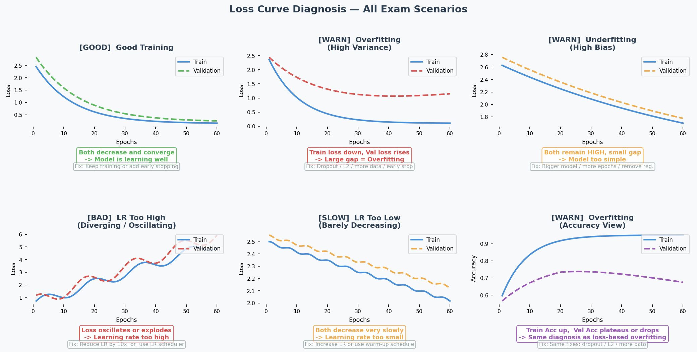

Bias-Variance Tradeoff & Design Choices
Exam Importance
MUST | The single most tested topic: 4 questions across all exams, ~20 marks total
Feynman Draft
Imagine you’re learning to throw darts at a bullseye.
-
High bias（高偏差） = you consistently miss in the same direction. Your aim is systematically off. You’re too rigid — like using only your wrist instead of your whole arm. This is underfitting（欠拟合） — your model is too simple to capture the real pattern.
-
High variance（高方差） = your throws are scattered all over the board. Sometimes you hit the bullseye, sometimes the wall. You’re too sensitive to tiny movements. This is overfitting（过拟合） — your model memorises the training data noise instead of learning the real pattern.
How do you diagnose this from training curves?
| What You See | Diagnosis | Name |
|---|---|---|
| Training accuracy HIGH, Validation accuracy LOW | High variance | Overfitting |
| Training accuracy LOW, Validation accuracy LOW | High bias | Underfitting |
| Training accuracy HIGH, Validation accuracy HIGH | Good fit! | Keep it |
Toy Example with Numbers:
| Scenario | Train Acc | Val Acc | Diagnosis | What to Do |
|---|---|---|---|---|
| A | 95% | 60% | Overfitting（过拟合） | Regularisation, more data |
| B | 50% | 50% | Underfitting（欠拟合） | Bigger model, remove regularisation |
| C | 92% | 88% | Good fit | Ship it |
Common Misconception: “If validation accuracy is low, always add regularisation.” WRONG! Regularisation helps overfitting (A), but makes underfitting (B) even WORSE because it constrains the model further.
Core Intuition: Bias（偏差） = model too simple for the problem. Variance（方差） = model too complex for the data amount.
The Design Choices Decision Tree (EXAM ESSENTIAL)
This is the teacher’s favourite question format. Memorise this:
Step 1: DIAGNOSE
Train >> Val? → Overfitting (high variance)
Train ≈ Val ≈ low? → Underfitting (high bias)
Step 2: PRESCRIBE
If OVERFITTING（过拟合）:
✅ Regularisation（正则化） (L1, L2, Dropout) → constrains model complexity
✅ More/diverse training data → helps generalise（泛化）
✅ Data augmentation（数据增强） → more variety without new data
✅ Batch normalisation（批量归一化） → regularising effect
✅ Early stopping（提前停止） → stop before overfitting
✅ Reduce model size → less capacity to memorise
❌ More epochs → makes it WORSE
❌ Bigger model → makes it WORSE
If UNDERFITTING（欠拟合）:
✅ Increase model size (more layers/neurons) → more capacity（容量）
✅ Train longer → give it time to learn
✅ Remove/reduce regularisation → stop constraining
✅ Better features / more data → more signal
✅ Transfer learning（迁移学习） → start from pretrained model
❌ Regularisation → makes it WORSE
❌ Dropout → makes it WORSE
❌ Smaller model → makes it WORSE
Past Exam Questions with Answer Logic
2024 Q2 [6 marks] — Overfitting Scenario
Setup: 5 hidden layers, ReLU, 20 neurons/layer, 1000 epochs. Train=95%, Val=60%.
| Suggestion | Answer | Reasoning |
|---|---|---|
| Train for 2000 epochs | NO | Already overfitting → more training = memorise more noise |
| Larger dataset | YES | More diverse data helps learn general patterns, not noise |
| L2 regularisation | YES | Penalises large weights → simpler, more generalisable model |
Practice Q3 [6 marks] — Underfitting Scenario
Setup: 2 hidden layers, ReLU, 5 neurons/layer, 2000 epochs, L1 regularisation. Train=50%, Val=50% (achievable=95%).
| Suggestion | Answer | Reasoning |
|---|---|---|
| Increase network size | YES | Underfitting = model too small → need more capacity |
| Initialise weights to 0 | NO | Creates symmetry → all neurons learn identical things → can’t differentiate features |
| Use dropout | NO | Dropout is regularisation → fights overfitting, not underfitting |
2025 Q2 [3 marks] — Curve Interpretation
Setup: Training curves after 20 epochs showing gap between train/val accuracy and diverging loss curves.
(a) Diagnose: High variance (overfitting) — clear gap between training and validation. Possibly also high bias if training loss is still high.
(b) Two changes (each targeting different aspect):
- Regularisation (e.g., L2, dropout) → reduces overfitting
- Data augmentation → more varied training data → better generalisation
- Batch normalisation → has regularising effect
- Increase model size (if bias is high) → more capacity to fit
How to Read Training Curves

Quick reference table:
| What you see on the plot | Diagnosis | Fix |
|---|---|---|
| Train loss ↓, Val loss ↑ after a point | Overfitting（过拟合） (high variance) | Dropout, L2, more data, early stop |
| Both losses stay HIGH | Underfitting（欠拟合） (high bias) | Bigger model, more epochs, less regularisation |
| Loss oscillates / explodes | LR too high | Reduce LR ×10, use scheduler |
| Both losses barely move | LR too low | Increase LR, use warm-up |
| Both losses ↓ and converge | Good fit | Keep going or early stop |
English Expression Templates
Diagnosing:
- “The model displays high variance as there is a clear gap between training and validation accuracy.”
- “This indicates overfitting, where the model fits the training data too closely but fails to generalise.”
Prescribing:
- “Applying regularisation can help reduce overfitting by limiting model complexity.”
- “Training on a larger dataset might help the model learn more general patterns.”
- “This will not help because the model is already underfitting — adding regularisation would constrain it further.”
中文思维 → 英文输出
| 你脑中的中文想法 | 考试中应该写的英文 |
|---|---|
| 过拟合了，训练高验证低 | “The model is overfitting — the training accuracy (X%) is significantly higher than the validation accuracy (Y%).” |
| 欠拟合，两个都很低 | “The model is underfitting, as both training and validation accuracies are low, indicating insufficient model capacity.” |
| 加正则化能改善 | “Applying regularisation is likely to improve validation accuracy by constraining model complexity.” |
| 不能再多训练了，会更差 | “Training for more epochs will not help — it is likely to worsen overfitting as the model continues to memorise training noise.” |
| dropout不能解决欠拟合 | “Dropout will not help because the model is underfitting. Dropout reduces effective capacity, which would worsen the problem.” |
| 模型太简单了，学不到东西 | “The model lacks sufficient capacity to capture the underlying patterns in the data.” |
| 需要更多数据来泛化 | “Increasing the dataset size is likely to help the model generalise better by providing more diverse examples.” |
| 权重初始化为0不行 | “Initialising all weights to zero creates symmetry — all neurons learn identical features, preventing the network from differentiating.” |
本章 Chinglish 纠正
| Chinglish (avoid) | Correct English |
|---|---|
| “The model is overfit” | “The model is overfitting” (use progressive form for the state) |
| “It should add regularisation” | “Applying regularisation would help” |
| “The gap is too big” | “There is a significant discrepancy between training and validation performance” |
| “More data can solve” | “Increasing the dataset size is likely to help the model generalise better” |
| “The model is not enough complex” | “The model has insufficient capacity” |
| “Train more epoch will be worse” | “Training for more epochs is likely to worsen overfitting” |
Whiteboard Self-Test
- Can you draw the bias-variance diagnosis table from memory?
- Given train=95%/val=55%, what’s the diagnosis? What 3 things help?
- Given train=50%/val=50%, what’s the diagnosis? Why does dropout NOT help?
- Can you explain why zero weight initialisation is bad?
- Can you explain why more epochs worsens overfitting?